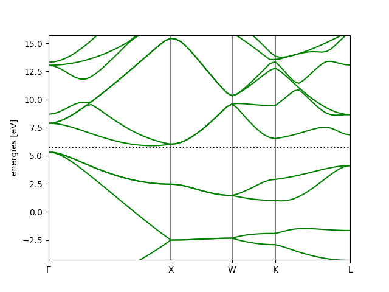

<!DOCTYPE HTML>
<html>
<head>
  <meta charset="utf-8">
  
  <title>GPAW 笔记 (二)——DFT 自洽场与能带计算 | Shigaro</title>
  <meta name="author" content="minyez">
  
  <meta name="description" content="minyez&#39;s blog on life, science and programming">
  
  
  <meta name="viewport" content="width=device-width, initial-scale=1, maximum-scale=1">

  <meta property="og:title" content="GPAW 笔记 (二)——DFT 自洽场与能带计算"/>
  <meta property="og:site_name" content="Shigaro"/>

  
    <meta property="og:image" content=""/>
  

  
  
    <link href="/assets/images/favicon/icon.png" rel="icon">
  
  
  <link rel="stylesheet" href="/css/bootstrap.min.css" media="screen" type="text/css">
  <link rel="stylesheet" href="/css/bootstrap.css" media="screen" type="text/css">
  <link rel="stylesheet" href="/css/font-awesome.css" media="screen" type="text/css">
  <link rel="stylesheet" href="/css/style.css" media="screen" type="text/css">
  <link rel="stylesheet" href="/css/responsive.css" media="screen" type="text/css">
  <link rel="stylesheet" href="/css/highlight.css" media="screen" type="text/css">
  <link rel="stylesheet" href="/css/google-fonts.css" media="screen" type="text/css">
  <!--[if lt IE 9]><script src="//html5shiv.googlecode.com/svn/trunk/html5.js"></script><![endif]-->

  <script src="/js/jquery-2.0.3.min.js"></script>

  <!-- analytics -->
  
<script>
  (function(i,s,o,g,r,a,m){i['GoogleAnalyticsObject']=r;i[r]=i[r]||function(){
  (i[r].q=i[r].q||[]).push(arguments)},i[r].l=1*new Date();a=s.createElement(o),
  m=s.getElementsByTagName(o)[0];a.async=1;a.src=g;m.parentNode.insertBefore(a,m)
  })(window,document,'script','//www.google-analytics.com/analytics.js','ga');
  ga('create', 'UA-111612868-1', 'auto');
  ga('send', 'pageview');
</script>


<script async src="//busuanzi.ibruce.info/busuanzi/2.3/busuanzi.pure.mini.js">
</script>


</head>

 <body 
>
  <nav id="main-nav" class="navbar navbar-default navbar-fixed-top" role="navigation">
  <div class="container">
    <button type="button" class="navbar-header navbar-toggle" data-toggle="collapse" data-target=".navbar-collapse">
      <span class="sr-only">Toggle navigation</span>
      <span class="icon-bar"></span>
      <span class="icon-bar"></span>
      <span class="icon-bar"></span>
    </button>
    <a class="navbar-brand" href="/"></a>
    <div class="collapse navbar-collapse nav-menu">
      <ul class="nav navbar-nav">
        

        <!-- Categories -->
        
        <li>
          <a href="/" title="Shigaro's Home"
            style="font-weight: normal; font-family: Calibri,Arial; font-size: 18px">
            <i class="fa fa-bank"></i>Home
          </a>
        </li>
        
        

        <!-- Categories -->
        
        <!-- Archives -->
        <li>
          <a href="/archives" title="All the articles."
            style="font-weight: normal; font-family: Calibri,Arial; font-size:     18px">
            <i class="fa fa-archive"></i>Archives
          </a>
        </li>
        
        

        <!-- Categories -->
        
        <!-- Tags -->
        <li>
          <a href="/tags" title="All the tags."
            style="font-weight: normal; font-family: Calibri,Arial; font-size:     18px">
            <i class="fa fa-tags"></i>Tags
          </a>
        </li>
        
        

        <!-- Categories -->
        
        <li class="dropdown">
          <a href="/categories" class="dropdown-toggle" data-toggle="dropdown" title="All the categories."
            style="font-weight: normal; font-family: Calibri,Arial; font-size:     18px">
            <i class="fa fa-folder"></i>Categories
            <b class="caret"></b>
          </a>
          <ul class="dropdown-menu">
            <li class="divider"></li>
            <li><a href="/categories" style="font-size: 20px; font-family: 'Calibri Light',Arial">All
                Categories</a><span></span></li>
            <li class="divider"></li>
            
            <li><a href="/categories/Software/"
                style="font-size: 15px; font-family: 微软雅黑">Software<span></span></a></li>
            
            <li><a href="/categories/Programming/"
                style="font-size: 15px; font-family: 微软雅黑">Programming<span></span></a></li>
            
            <li><a href="/categories/Comment/"
                style="font-size: 15px; font-family: 微软雅黑">Comment<span></span></a></li>
            
            <li><a href="/categories/Algorithm/"
                style="font-size: 15px; font-family: 微软雅黑">Algorithm<span></span></a></li>
            
            <li class="divider"></li>
          </ul>
        </li>
        
        

        <!-- Categories -->
        
        <li>
          <a href="/about" title="About me."
            style="font-weight: normal; font-family: Calibri,Arial; font-size: 18px">
            <i class="fa fa-user"></i>About
          </a>
        </li>
        
        
      </ul>
    </div>
  </div> <!-- container -->
</nav>
<div class="clearfix"></div>
  <div class="container">
  	<div class="content">
    	 


	
		<div class="page-header">		
			<h1> GPAW 笔记 (二)——DFT 自洽场与能带计算</h1>
		</div>		
	


<div class="row post">
	<!-- cols -->
	
	<div id="top_meta"></div>
	<div class="col-md-9">
	

	<!-- content -->
	<div class="mypage">		
	  		

	  <link rel="stylesheet" type="text/css" href="/css/hint.min.css"><div class="alert alert-success"><i class="fa fa-lightbulb-o  float-left"></i>  <p>以金刚石结构 Si 为例，演示了用 GPAW 计算材料电子能带结构的过程，对结果进行了简单分析.</p>
</div>
<a id="more"></a>
<h2 id="背景"><a href="#背景" class="headerlink" title="背景"></a>背景</h2><p>一年前我在 <a href="/2018/07/20/gpaw-1/" title="GPAW笔记(一)——安装及测试">GPAW笔记(一)——安装及测试</a> 一文中介绍了 GPAW 的安装和简单测试。当时主要是为了比较 GPAW, abinit 和 VASP 的 <em> GW </em> 效率，于是稍微研究了一下 GPAW 中参数含义，运行了一些官方网站上的脚本。在相近的参数下作了三个程序的 <em> GW </em> 计算交差后，就没有再管，当时也没有留下清楚的学习笔记.</p>
<p>由于最近实际计算的需要，我又重新学习 GPAW, 着重于 DFT 能带计算，<em>GW</em> 和 BSE. 这一篇笔记主要记录了基础 DFT 计算部分的学习，包括 SCF 和能带，简单分析标准输出。这里使用的结构是金刚石型的硅，晶格常数 $a=5.43$ (A).</p>
<h2 id="SCF-计算"><a href="#SCF-计算" class="headerlink" title="SCF 计算"></a>SCF 计算</h2><p>从官网例子中改编得的一个 SCF 计算脚本如下.</p>
<figure class="highlight python"><table><tr><td class="code"><pre><span class="line"><span class="keyword">from</span> ase.build <span class="keyword">import</span> bulk</span><br><span class="line"><span class="keyword">from</span> gpaw <span class="keyword">import</span> GPAW, PW, FermiDirac</span><br><span class="line"></span><br><span class="line">si = bulk (<span class="string">'Si'</span>, <span class="string">'diamond'</span>, a=<span class="number">5.43</span>)</span><br><span class="line">calc = GPAW (mode=PW (<span class="number">200</span>), xc=<span class="string">'PBE'</span>, kpts=&#123;<span class="string">'size'</span>: (<span class="number">8</span>,<span class="number">8</span>,<span class="number">8</span>), <span class="string">'gamma'</span>: <span class="literal">True</span>&#125;,</span><br><span class="line">            random=<span class="literal">True</span>, occupations=FermiDirac (<span class="number">0.01</span>), txt=<span class="string">'Si_gs.txt'</span>)</span><br><span class="line">si.calc = calc</span><br><span class="line">si.get_potential_energy ()</span><br><span class="line">calc.write (<span class="string">'Si_gs.gpw'</span>)</span><br></pre></td></tr></table></figure>
<p>对每行的说明:</p>
<ul>
<li>行 4: 用 <code>bulk</code> 方法构造 Si 模型</li>
<li>行 5-6: 初始化 GPAW. 使用平面波基组 (截断为 200 eV). 泛函为 PBE. 布里渊区采样为 $\Gamma$ 中心 $8\times8\times8$ 的均匀格点。初始波函数随机生成。占据数计算采用 Fermi-Dirac 分布，. <code>txt</code> 选项指定输出文件.</li>
<li>行 7: 将 Si 模型的 calculator 指定为刚刚初始化好的 GPAW.</li>
<li>行 8: 开始 SCF 过程。具体来说，<code>Atoms.get_potential_energy</code> 方法用于获取 <code>Atoms._calc</code> 的 <code>energy</code> 属性，操作上是从 <code>Calculator.results</code> 字典中提取关键字 <code>energy</code> 值。对于未收敛的 GPAW calculator, <code>energy</code> 关键字不存在，此时会执行 <code>GPAW.calculate</code> 进行 SCF 循环，直到收敛，添加 <code>energy</code> 并返回之.</li>
<li>行 9: 将计算过程的所有信息写入 Si_gs.gpw 文件中.</li>
</ul>
<h2 id="标准输出分析"><a href="#标准输出分析" class="headerlink" title="标准输出分析"></a>标准输出分析</h2><p>标准输出保存在 Si_gs.txt 中。主要看三部分。在 200 行附近给出 SCF 迭代的流程</p>
<figure class="highlight plain"><table><tr><td class="code"><pre><span class="line">                     log10-error:    total        iterations:</span><br><span class="line">           time      wfs    density  energy       fermi  poisson</span><br><span class="line">iter:   1  14:49:29  +1.03   +inf   -10.866303    7</span><br><span class="line">iter:   2  14:49:30  -1.97  -0.80   -10.866989    2</span><br><span class="line">iter:   3  14:49:30  -1.01  -0.81   -11.320728    22</span><br><span class="line">iter:   4  14:49:31  -1.94  -0.56   -10.847586    3</span><br><span class="line">iter:   5  14:49:31  -2.71  -1.11   -10.806417    8</span><br><span class="line">iter:   6  14:49:31  -2.69  -1.35   -10.780669    9</span><br><span class="line">iter:   7  14:49:32  -3.97  -2.59   -10.780801    0</span><br><span class="line">iter:   8  14:49:32  -5.11  -2.71   -10.780798    0</span><br><span class="line">iter:   9  14:49:33  -5.83  -2.71   -10.780763    0</span><br><span class="line">iter:  10  14:49:33  -6.76  -3.19   -10.780765    0</span><br><span class="line">iter:  11  14:49:34  -8.02  -3.59   -10.780765    0</span><br><span class="line">iter:  12  14:49:34  -6.82  -3.60   -10.780765    0</span><br><span class="line">iter:  13  14:49:34  -8.06  -3.60   -10.780764    0</span><br><span class="line">iter:  14  14:49:35 -10.08  -3.78   -10.780764    0</span><br><span class="line">iter:  15  14:49:35  -8.45  -3.78   -10.780764    0</span><br><span class="line">iter:  16  14:49:36  -8.00  -3.68   -10.780764    0</span><br><span class="line">iter:  17  14:49:36  -8.17  -3.80   -10.780764    0</span><br><span class="line">iter:  18  14:49:37  -9.30  -3.92   -10.780764    0</span><br><span class="line">iter:  19  14:49:37  -8.99  -3.95   -10.780764    0</span><br><span class="line">iter:  20  14:49:37  -9.83  -4.06   -10.780764    0</span><br><span class="line"></span><br><span class="line">Converged after 20 iterations.</span><br></pre></td></tr></table></figure>
<p>往下一点是相对 PAW 原子的总能量成分分析。从 GPAW 分析来看，Si 在形成晶体后，电子动能增加，势能与交换关联能降低。后面两者容易理解，但原子形成固体后动能增加这一点从化学成键相悖。只能说在赝势 PAW 下，直接的能量组成并没有物理意义. VASP 的 OUTCAR 中的能量组成分析没有给出动能的部分.</p>
<figure class="highlight plain"><table><tr><td class="code"><pre><span class="line">Energy contributions relative to reference atoms: (reference = -15772.688500)</span><br><span class="line"></span><br><span class="line">Kinetic:        +15.782785</span><br><span class="line">Potential:      -13.855376</span><br><span class="line">External:        +0.000000</span><br><span class="line">XC:             -12.678254</span><br><span class="line">Entropy (-ST):   -0.000000</span><br><span class="line">Local:           -0.029919</span><br><span class="line">--------------------------</span><br><span class="line">Free energy:    -10.780764</span><br><span class="line">Extrapolated:   -10.780764</span><br></pre></td></tr></table></figure>
<p>再往下是关于能带结构的简单信息。包括费米能级和前两个 k 点上的价带导带本征值和占据数。需要注意的是这里的 Occupancy 是该自旋轨道上的电子数乘以 k 点分数权重的值。例如 $\Gamma$ 点权重是固定的 1/512, 价带全占满有 2 个电子，2 / 512 = 0.00391。如果是自旋极化计算，这部分会给出两个自旋通道的占据数，占据数会变成非极化的一半. $\Gamma$ 点带隙为 2.56 eV.</p>
<figure class="highlight plain"><table><tr><td class="code"><pre><span class="line">Fermi level: 5.73099</span><br><span class="line"></span><br><span class="line">Showing only first 2 kpts</span><br><span class="line"> Kpt  Band  Eigenvalues  Occupancy</span><br><span class="line">  0     2      5.31933    0.00391</span><br><span class="line">  0     3      5.31934    0.00391</span><br><span class="line">  0     4      7.87829    0.00000</span><br><span class="line">  0     5      7.87829    0.00000</span><br><span class="line"></span><br><span class="line">  1     2      4.51004    0.02344</span><br><span class="line">  1     3      4.51006    0.02344</span><br><span class="line">  1     4      7.32815    0.00000</span><br><span class="line">  1     5      9.02227    0.00000</span><br></pre></td></tr></table></figure>
<h2 id="能带计算"><a href="#能带计算" class="headerlink" title="能带计算"></a>能带计算</h2><p>PBE 能带计算需要使用 SCF 得到的电子密度。官方网站给出的一个能带计算例子如下</p>
<figure class="highlight python"><table><tr><td class="code"><pre><span class="line">calc = GPAW (<span class="string">'Si_gs.gpw'</span>, nbands=<span class="number">16</span>, fixdensity=<span class="literal">True</span>, symmetry=<span class="string">'off'</span>,</span><br><span class="line">            kpts=&#123;<span class="string">'path'</span>: <span class="string">'GXWKL'</span>, <span class="string">'npoints'</span>: <span class="number">60</span>&#125;, convergence=&#123;<span class="string">'bands'</span>: <span class="number">8</span>&#125;)</span><br><span class="line">calc.get_potential_energy ()</span><br><span class="line">calc.write (<span class="string">'Si_bs.gpw'</span>)</span><br></pre></td></tr></table></figure>
<p>这里主要需要理解 <code>GPAW</code> 一行</p>
<ul>
<li>第一个参数 <code>Si_gs.gpw</code> 为读入文件.</li>
<li><code>nbands</code> 为 SCF 迭代所包含的能带数.</li>
<li><code>fixdensity=True</code>, 顾名思义，固定电子密度.</li>
<li><code>kpts</code> 为一个字典，包含 <code>path</code> 和 <code>npoints</code> 两个关键字. <code>path</code> 包含 BZ 特殊点记号。这里的路径为 G-X-W-K-L, 根据总 k 点数 <code>npoints</code> 自动设置所需要计算的 k 点，不会重复计算特殊 k 点。特殊点之间的 k 点数不是均匀的.</li>
<li><code>convergence</code> 为一个字典，包含关键字 <code>band</code>, 值为 8. 表示使用最低的 8 个能级的波函数的 Kohn-Sham 方程余矢量模方作为收敛判据。可以使用 ‘all’ 和 <code>-8</code> 之类的负值，后者表示收敛除最后 8 个外的所有能级。具体参考 <a href="https://wiki.fysik.dtu.dk/gpaw/documentation/manual.html#accuracy-of-the-self-consistency-cycle" target="_blank" rel="noopener">Accuracy of the self-consistency cycle</a> 条目.</li>
</ul>
<p><code>get_potential_energy</code> 开始 SCF 循环，结束后将 calculator 写入 Si_bs.gpw.</p>
<p>GPAW 提供了能带分析的帮助方法 <code>band_structure</code>. 该方法继承自 ASE 的 <code>Calculator</code> 类。使用方式如下</p>
<figure class="highlight python"><table><tr><td class="code"><pre><span class="line">calc = GPAW (<span class="string">'Si_bs.gpw'</span>)    <span class="comment"># 读取 Si 能带计算结果</span></span><br><span class="line">bs = calc.band_structure ()  <span class="comment"># 调用 band_structure 方法</span></span><br><span class="line">bs.plot (show=<span class="literal">True</span>, emax=<span class="number">10.0</span>, filename=<span class="string">"Si_bs.png"</span>) <span class="comment"># 作图</span></span><br></pre></td></tr></table></figure>
<p><code>band_structure</code> 方法返回一个 <code>ase.dft.band_structure.BandStructure</code> 类。得到能带图如下，和 <a href="https://wiki.fysik.dtu.dk/gpaw/tutorials/bandstructures/bandstructures.html#bandstructures" target="_blank" rel="noopener">官网例子</a> 是相同的.</p>
<p><figure class="null"><figcaption> </figcaption></figure></p>
<h2 id="与电子结构相关的-GPAW-方法"><a href="#与电子结构相关的-GPAW-方法" class="headerlink" title="与电子结构相关的 GPAW 方法"></a>与电子结构相关的 GPAW 方法</h2><p><code>BandStructure</code> 作图非常方便，但如果是自己作图或者需要能级数据做进一步处理，就需要从 <code>GPAW</code> 对象直接获取 k 点和 Kohn-Sham 本征值。一些可能用到的方法如下</p>
<table>
<thead>
<tr>
<th style="text-align:left">方法</th>
<th style="text-align:left">继承</th>
<th style="text-align:left">作用</th>
<th style="text-align:center">参数</th>
<th style="text-align:center">返回</th>
</tr>
</thead>
<tbody>
<tr>
<td style="text-align:left"><code>get_fermi_level</code></td>
<td style="text-align:left"><code>gpaw.paw.PAW</code></td>
<td style="text-align:left">获取 Fermi 能级</td>
<td style="text-align:center"></td>
<td style="text-align:center"><code>float</code></td>
</tr>
<tr>
<td style="text-align:left"><code>get_number_of_spins</code></td>
<td style="text-align:left"><code>gpaw.paw.PAW</code></td>
<td style="text-align:left">获取自旋通道数量</td>
<td style="text-align:center"></td>
<td style="text-align:center"><code>int</code></td>
</tr>
<tr>
<td style="text-align:left"><code>get_number_of_electrons</code></td>
<td style="text-align:left"><code>gpaw.paw.PAW</code></td>
<td style="text-align:left">获取价电子总数</td>
<td style="text-align:center"></td>
<td style="text-align:center"><code>float</code></td>
</tr>
<tr>
<td style="text-align:left"><code>get_eigenvalues</code></td>
<td style="text-align:left"><code>gpaw.paw.PAW</code></td>
<td style="text-align:left">获取本征值 (eV)</td>
<td style="text-align:center"><code>(kpt=0, spin=0)</code></td>
<td style="text-align:center">1D array</td>
</tr>
<tr>
<td style="text-align:left"><code>get_occupation_numbers</code></td>
<td style="text-align:left"><code>gpaw.paw.PAW</code></td>
<td style="text-align:left">获取轨道占据数</td>
<td style="text-align:center"><code>(kpt=0, spin=0)</code></td>
<td style="text-align:center">1D array</td>
</tr>
<tr>
<td style="text-align:left"><code>get_ibz_k_points</code></td>
<td style="text-align:left"><code>gpaw.paw.PAW</code></td>
<td style="text-align:left">获取不可约 k 点</td>
<td style="text-align:center"></td>
<td style="text-align:center">2D array</td>
</tr>
<tr>
<td style="text-align:left"><code>get_bz_k_points</code></td>
<td style="text-align:left"><code>gpaw.paw.PAW</code></td>
<td style="text-align:left">获取所有 k 点</td>
<td style="text-align:center"></td>
<td style="text-align:center">2D array</td>
</tr>
</tbody>
</table>
<p>例如，获取所有能级到 <code>eigens</code> 数组</p>
<figure class="highlight python"><table><tr><td class="code"><pre><span class="line">eigens = np.array ([[</span><br><span class="line">                    calc.get_eigenvalues (ik, isp) <span class="keyword">for</span> ik,_ <span class="keyword">in</span> enumerate (calc.get_ibz_k_points ())</span><br><span class="line">                   ] <span class="keyword">for</span> isp <span class="keyword">in</span> range (calc.get_number_of_spins ())])</span><br></pre></td></tr></table></figure>
<p>获取各 k 点的直接带隙</p>
<figure class="highlight python"><table><tr><td class="code"><pre><span class="line">vb = int (calc.get_number_of_electrons ()/<span class="number">2.0</span>) - <span class="number">1</span></span><br><span class="line">direct_gaps = eigens [<span class="number">0</span>, :, vb+<span class="number">1</span>] - eigens [<span class="number">0</span>, :, vb]</span><br></pre></td></tr></table></figure>
<p>手动制作能带图的方法可以参考 <a href="https://www.mantidproject.org/Band_Structures_With_GPAW" target="_blank" rel="noopener">Band Structures With GPAW - Mantid Project</a>.</p>
	  
	</div>

    
	<div>
  	<center>
	<div class="pagination">
<ul class="pagination">
	 
				
    	<li class="prev"><a href="/2019/06/19/gpaw-3-diag-gs/" class="alignleft prev"><i class="fa fa-arrow-circle-o-left"></i>Prev</a></li>
  		

        <li><a href="/archives"><i class="fa fa-archive"></i>Archive</a></li>

		
		   <li class="next"><a href="/2019/05/24/outwin-read/" class="alignright next">Next<i class="fa fa-arrow-circle-o-right"></i></a></li>         
        
	
</ul>
</div>

    </center>
	</div>
    
	
    <!-- bdshare -->
    
        

        

    

	<!-- comment -->
    
<section id="comment">
  <h2 class="title">Comments</h2>

  
<div id="disqus_thread"></div>
<script>
/**
*  RECOMMENDED CONFIGURATION VARIABLES: EDIT AND UNCOMMENT THE SECTION BELOW TO INSERT DYNAMIC VALUES FROM YOUR PLATFORM OR CMS.
*  LEARN WHY DEFINING THESE VARIABLES IS IMPORTANT: https://disqus.com/admin/universalcode/#configuration-variables*/
/*
var disqus_config = function () {
this.page.url = PAGE_URL;  // Replace PAGE_URL with your page's canonical URL variable
this.page.identifier = PAGE_IDENTIFIER; // Replace PAGE_IDENTIFIER with your page's unique identifier variable
};
*/
(function() { // DON'T EDIT BELOW THIS LINE
var d = document, s = d.createElement('script');
s.src = 'https://shigaro.disqus.com/embed.js';
s.setAttribute('data-timestamp', +new Date());
(d.head || d.body).appendChild(s);
})();
</script>
<noscript>Please enable JavaScript to view the <a href="https://disqus.com/?ref_noscript">comments powered by Disqus.</a></noscript>
  
</section>


	</div> <!-- col-md-9/col-md-12 -->
		
	
	<div id="side_meta">
		<div class="col-md-3" id="post_meta"> 

	<!-- date -->
	
	<div class="meta-widget">
	<i class="fa fa-clock-o"></i>
	2019-06-18 created
	</div>
	
		
    	<div class="meta-widget">
    	<i class="fa fa-pencil"></i>
    	2020-09-14 last modified
    	</div>
    	
    
	

	<!-- page view by busuanzi -->
	
	<div class="meta-widget">
	<span id="busuanzi_container_page_pv">
	<i class="fa fa-eye"></i>
	<span id="busuanzi_value_page_pv"></span> views
	</span>
	</div>
	

	<!-- post word count -->
	
	<div class="meta-widget">
	<i class="fa fa-tachometer"></i>
	<span class="post-count">1.8k</span> words
	</div>
	

	<!-- categories -->
    
	<div class="meta-widget">
	<a data-toggle="collapse" data-target="#categorys"><i class="fa fa-folder"></i></a>	
    <ul id="categorys" class="tag_box list-unstyled collapse in">
          
  <li>
    <li><a href="/categories/Software/">Software<span class="badge">26</span></a></li>
  </li>

    </ul>
	</div>
	

	<!-- tags -->
	
	<div class="meta-widget">
	<a data-toggle="collapse" data-target="#tags"><i class="fa fa-tags"></i></a>		  
    <ul id="tags" class="tag_box list-unstyled collapse in">	  
	    
  <li><a href="/tags/GPAW/">GPAW<span class="badge">5</span></a></li> <li><a href="/tags/DFT/">DFT<span class="badge">4</span></a></li> <li><a href="/tags/Tutorial/">Tutorial<span class="badge">1</span></a></li> <li><a href="/tags/Band-structure/">Band structure<span class="badge">2</span></a></li>

    </ul>
	</div>
		

	<!-- toc -->
	<div class="meta-widget">
	
	   <a data-toggle="collapse" data-target="#toc"><i class="fa fa-bars"></i></a>
	   <div id="toc" class="toc collapse in">
			<ol class="toc-article"><li class="toc-article-item toc-article-level-2"><a class="toc-article-link" href="#背景"><span class="toc-article-text">背景</span></a></li><li class="toc-article-item toc-article-level-2"><a class="toc-article-link" href="#SCF-计算"><span class="toc-article-text">SCF 计算</span></a></li><li class="toc-article-item toc-article-level-2"><a class="toc-article-link" href="#标准输出分析"><span class="toc-article-text">标准输出分析</span></a></li><li class="toc-article-item toc-article-level-2"><a class="toc-article-link" href="#能带计算"><span class="toc-article-text">能带计算</span></a></li><li class="toc-article-item toc-article-level-2"><a class="toc-article-link" href="#与电子结构相关的-GPAW-方法"><span class="toc-article-text">与电子结构相关的 GPAW 方法</span></a></li></ol>
		</div>
	
	</div>
	
    <hr>
	
</div><!-- col-md-3 -->

	</div>
		

</div><!-- row -->

<script type="text/javascript">
var disqus_shortname = 'shigaro';
(function(){
  var dsq = document.createElement('script');
  dsq.type = 'text/javascript';
  dsq.async = true;
  dsq.src = '//' + disqus_shortname + '.disqus.com/embed.js';
  (document.getElementsByTagName('head')[0] || document.getElementsByTagName('body')[0]).appendChild(dsq);
}());
</script>


	</div>
  </div>
  <div class="container-narrow">
  <footer> <p>
  
  &copy; 2020 by <a href="http://shigaro.org"> minyez </a>
  
    | <a href="http://github.com/minyez/hexo-theme-freemind/">Theme</a> based on two Freemind themes by <a href="https://github.com/wzpan/hexo-theme-freemind/">wzpan</a> and <a href="https://github.com/PytLab/hexo-theme-freemind/">PytLab</a> 
    | Powered by <a href="https://github.com/hexojs/hexo">Hexo</a>
  
    <span id="busuanzi_container_site_uv">| <span id="busuanzi_value_site_uv"></span> visitors</span>
  
  
	| <span class="post-count">52.3k</span> words
  
</p>
 </footer>
</div> <!-- container-narrow -->
  


  
<a id="gotop" href="#">   
  <span>▲</span> 
</a>

<script src="/js/jquery.imagesloaded.min.js"></script>
<script src="/js/gallery.js"></script>
<script src="/js/bootstrap.min.js"></script>
<script src="/js/main.js"></script>
<script src="/js/search.js"></script> 


<link rel="stylesheet" href="/fancybox/jquery.fancybox.css" media="screen" type="text/css">
<script src="/fancybox/jquery.fancybox.pack.js"></script>
<script type="text/javascript">
(function($){
  $('.fancybox').fancybox();
})(jQuery);
</script>


   <script type="text/javascript">      
     var search_path = "search.xml";
	 if (search_path.length == 0) {
	 	search_path = "search.xml";
	 }
	 var path = "/" + search_path;
     searchFunc(path, 'local-search-input', 'local-search-result');
   </script>


<!-- Global site tag (gtag.js) - Google Analytics -->
<!--    added 2018-07-12 -->
<!-- modified 2019-05-10 -->

<script async src="https://www.googletagmanager.com/gtag/js?id=UA-111612868-1"></script>
<script>
  window.dataLayer = window.dataLayer || [];
  function gtag(){dataLayer.push(arguments);}
  gtag('js', new Date());

  gtag('config', 'UA-111612868-1');
</script>


<script type="text/x-mathjax-config">
    MathJax.Hub.Config({
        tex2jax: {
            inlineMath: [ ["$","$"], ["\\(","\\)"] ],
            skipTags: ['script', 'noscript', 'style', 'textarea', 'pre', 'code'],
            processEscapes: true
        },
        TeX: {equationNumbers: { autoNumber: "AMS" }}
    });
    MathJax.Hub.Queue(function() {
        var all = MathJax.Hub.getAllJax();
        for (var i = 0; i < all.length; ++i)
            all[i].SourceElement().parentNode.className += ' has-jax';
    });
</script>
<!--<script src="http://cdn.mathjax.org/mathjax/latest/MathJax.js?config=TeX-AMS-MML_HTMLorMML"></script>-->
<script type="text/javascript" async src="https://cdnjs.cloudflare.com/ajax/libs/mathjax/2.7.1/MathJax.js?config=TeX-AMS-MML_HTMLorMML"></script>

</body>
   </html>
